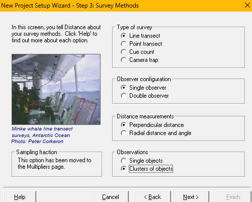
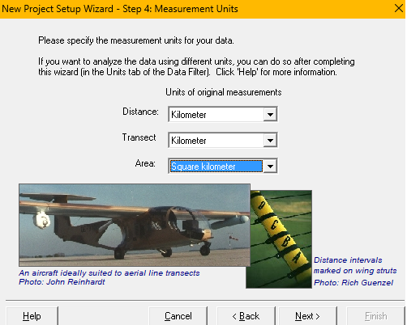
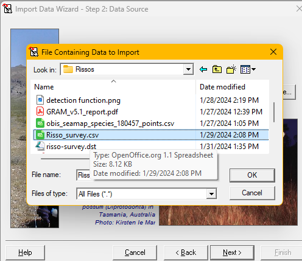
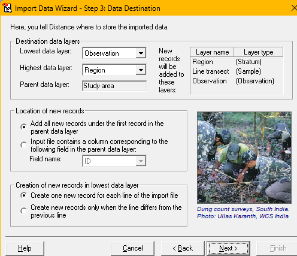
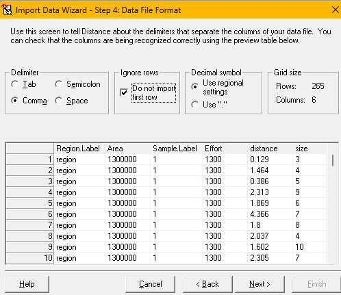
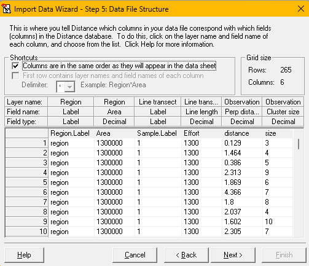
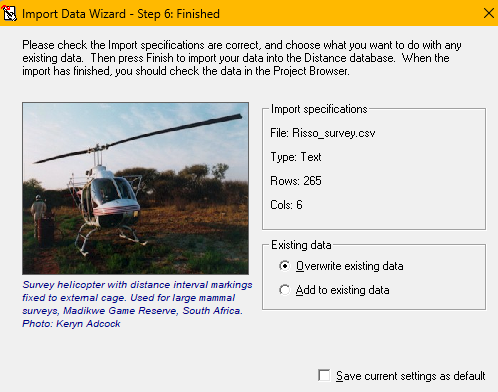
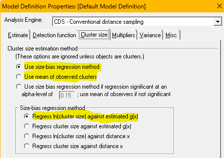
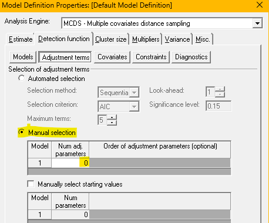

Analysis of animals that occur in groups
Distance for Windows exercise
Description of survey
The data for this practical is simulated (so we can compare estimates derived from our analysis with truth), but the simulation is based upon a series of surveys conducted in the eastern Atlantic 2010-2019 by the U.S. National Marine Fisheries Service for a programme called Atlantic Marine Assessment Program for Protected Species (Palka et al., 2017). Estimates of abundance of Risso’s dolphins (Grampus griseus) were derived from these survey data and reported in Roberts et al. (2022).
Because the data are simulated, we know the following characteristics of the population we are studying:
| Attribute | true value |
|---|---|
| Number of groups | 4333 |
| Average group size | 6 |
| Number of individuals | 26000 |
You will contrast the estimates you derive from your analyses against these known values.
Import data into Distance for Windows
Previous DistWin practicals have provided you with a DistWin project in archive (.zip) format. For this practical, the survey data exist as a comma delimited file (CSV). Before you begin analysis, you will import the file into DistWin. Download the .csv file onto your computer by following this link and save it into a directory you can easily relocate.







- Open Distance for Windows, indicate you want to start a new project, specify the project will analyse data from a survey already completed. You will then indicate it is a line transect survey, with a single observer. The
.csvfile contains perpendicular distance measurements of clusters of Risso’s dolphins (setup methodsabove). - Indicate perpendicular distances and transect lengths are measured in kilometers and study region size is specified in square kilometers (
setup unitsabove). - Skip the next (multipliers) project setup screen. Move to the Data Import Wizard. Specify the
.csvfile location you downloaded to your computer previously (import sourceabove). - The
.csvfile contains information about the Stratum layer, Sample layer and Observation layer, just as is indicated in the default data import screen as shown (import destinationabove). - Specify the use of the comma as delimiter between fields and that the first row of the
.csvfile contains field names and not data, therefore the first row should not be imported (import file formatabove). - The next screen asks for definition of each field to be imported into DistWin. As a time-saving feature, the fields in the
.csvfile are in the order expected by DistWin: stratum fields, sample fields and observation fields. Ticking the box at top left identifies all fields for import (import file structureabove). - The final screen shows the status of rows of the data file coming into the DistWin project (
import finaliseabove).
Modelling strategy
With animals that occur in groups, care needs to be taken with regard to the size bias problem described in cluster size lecture. There are three general approaches in the estimation of cluster size when analysing distance sampling surveys of animals in groups. - use average size of detected groups as an estimate of the average size of groups in the population, - adjust average size of detected groups by regressing ln(group size) on estimated probability of detection at the distance of each observed group (Buckland et al., 2001, sec. 3.5.4), or - including cluster size as a covariate in the detection function (Buckland et al., 2001, sec. 3.5.5). - This approach makes use of Horvitz-Thompson-Like estimators that estimate abundance of individuals (\(\hat{N}\)) and estimate abundance of groups (\(\hat{N_s}\)). The mean cluster size in the population is estimated as the ratio of those estimates (Buckland et al., 2015, sec. 6.4.3.3).
Construct models
 While the focus of this practical is not examining different key function models, start with the basic idea of fitting three key function models to the Risso’s data set. For each of the three key function models, estimate the average cluster size in the population using the first two methods described above (a) as mean size of observed groups and b) using the regression approach). Specification of these two approaches is determined by the radio buttons chosen (figure at right).
In addition, employ the third method (adding group size to the detection function model). This method cannot be applied to models with a uniform key function because that model lacks a scale parameter (see covariate lecture for a reminder). When constructing the detection function models using the Cluster size covariate, it is simplest to turn off adjustment terms. 
You will construct 8 models with which to analyse the Risso’s dolphin survey: - uniform key - average size of detected clusters - size bias regression estimate of population average cluster size - half normal key - average size of detected clusters - size bias regression estimate of population average cluster size - Cluster size as a covariate in the detection function and no adjustments - hazard rate key - average size of detected clusters - size bias regression estimate of population average cluster size - Cluster size as a covariate in the detection function and no adjustments
To make comparison among models easier, adjust the Project Browser to remove estimates of density and add additional columns to the Project Browser table for Size bias cluster size (and CV), Abundance of individuals (and confidence interval bounds) as well as bootstrap confidence interval bounds of estimated abundance of individuals. This is because when cluster size is a covariate in the detection function precision of estimated individual abundance can only be determined in DistWin through use of the bootstrap.
When all 8 analyses have been completed, pay particular attention to the confidence intervals on estimated individual abundance, recalling the true abundance of individuals is 26000 in this simulated population.
- Note the difference in AIC among models with and without cluster size in the detection function
- Contrast the estimates of cluster size in the population among the three forms of analysis
- Are there confidence intervals on estimates of individual abundance that nearly fail to include the true value of 26000?
- What method of population average cluster size estimation do those have in common?